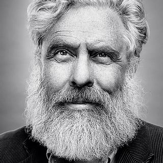

Our Team
Pradeep Bugga
CEO
Pradeep is an expert in synthetic chemistry, chemical biology, surface chemistry, and biomaterials.
Pradeep Bugga, PhD
CEO
Arthur Chung
Project Manager
Arthur has a diverse background in philosophy, tech, and law. Besides project management, his responsiblities at Kern include scientific communications and front end development for the website and Kern's various software tools.
Arthur Chung
Project Manager

George M. Church, PhD
Co-Founder, Professor at Harvard / MIT
George has made foundational contributions to DNA sequencing and is a pioneer in synthetic biology and large-scale genome engineering.
George M. Church, PhD
Co-Founder, Professor at Harvard / MIT
Henry H. Lee, PhD
Co-Founder, Advisor
Henry is a leading expert in systems and synthetic biology. At Harvard Medical School, he developed the first demonstration of enzymatic DNA synthesis for data storage.
Henry H. Lee, PhD
Co-Founder, Advisor
Alice Marbach
Software Intern
Alice is a computer science major and senior at Brown University. After graduation, she intends to work as a software engineer.
Alice Marbach
Software Intern
Vitor Pinheiro, PhD
Scientific Advisor
After a PhD in Bacterial Pathogenesis at University of Cambridge with Prof. David Ellar, Vitor did seven years of post-doctoral work at the MRC Laboratory of Molecular Biology in Cambridge with Dr. Phil Holliger. Subsequently, he started his independent research career at UCL and Birkbeck in 2013, and moved to KU Leuven in September 2018.
Vitor Pinheiro, PhD
Scientific Advisor
Jonathan Teutenberg, PhD
Software, Algorithms
Jonathan is a Computation Scientist / Data Scientist. He has extensive experience in DNA sequencing and analysis from working at Oxford Nanopore Technologies and Quantum Biosystems.
Jonathan Teutenberg, PhD
Software, Algorithms
Nava Whiteford, PhD
Software/Hardware, Advisor
As an expert in DNA sequencing technology, Nava has engaged in the development of numerous novel sequencing platforms. This includes novel algorithmic approaches to the analysis of sequencing-by-synthesis (Illumina and others), protein-nanopores (at Oxford Nanopore), solid-state nanopore (as CTO of Quantum Biosystems), and other (XGenomes) datasets.
At Kern, Nava is able to apply his deep understanding of various methods of how to “read” DNA to the development of Kern's novel enzymatic DNA synthesis approach— helping us scale our DNA “write” platform. Furthermore, he is assisting us with computational aspects of our platform including our encoding/decoding process, protein engineering, and the development of our hardware platform.
At Kern, Nava is able to apply his deep understanding of various methods of how to “read” DNA to the development of Kern's novel enzymatic DNA synthesis approach— helping us scale our DNA “write” platform. Furthermore, he is assisting us with computational aspects of our platform including our encoding/decoding process, protein engineering, and the development of our hardware platform.
Nava Whiteford, PhD
Software/Hardware; Advisor